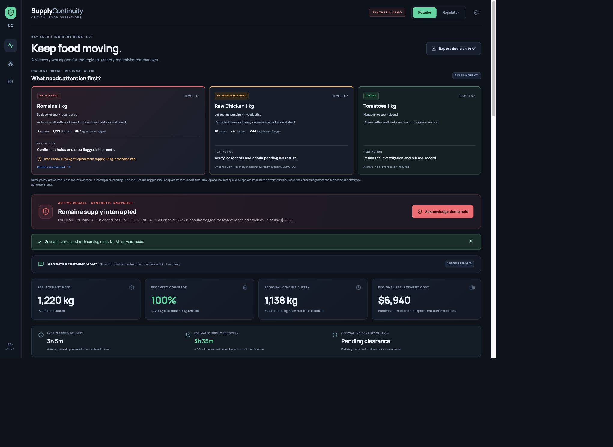

Short-video app
A TikTok clone exploring onboarding, authentication, discovery, and user profiles in Flutter.
View source ↗I build software for the browser and mobile, from food recall tracing to Flutter interfaces.
A hackathon demo for tracing food recalls, checking shared suppliers, and comparing recovery options before a human approves a plan.
Explore the project ↗
A TikTok clone exploring onboarding, authentication, discovery, and user profiles in Flutter.
View source ↗A browser start page bringing together a clock, local to-dos, weather, and rotating quotes.
View source ↗